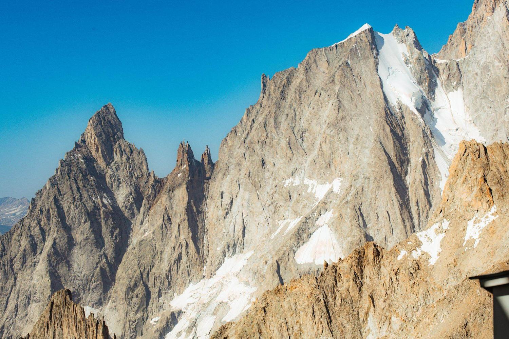
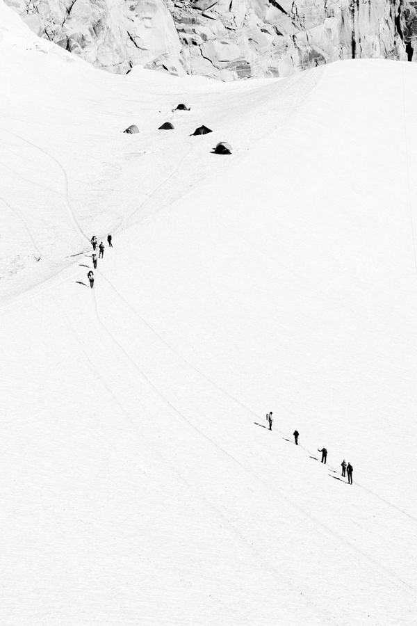
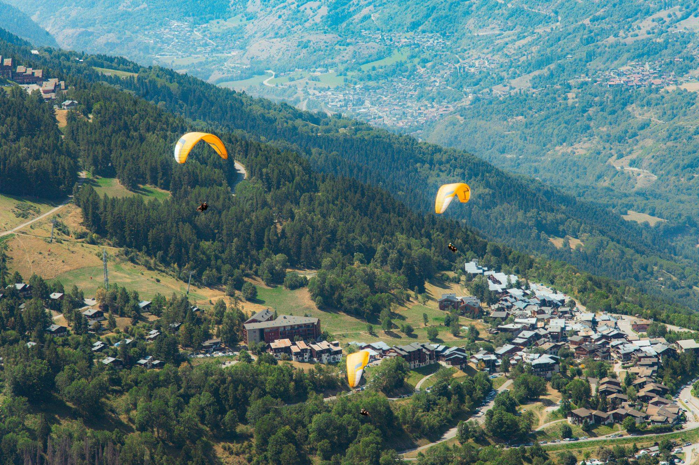
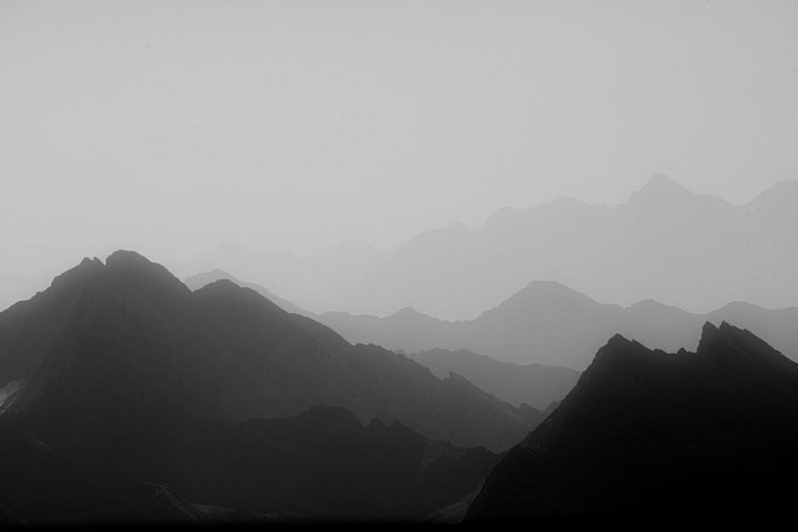
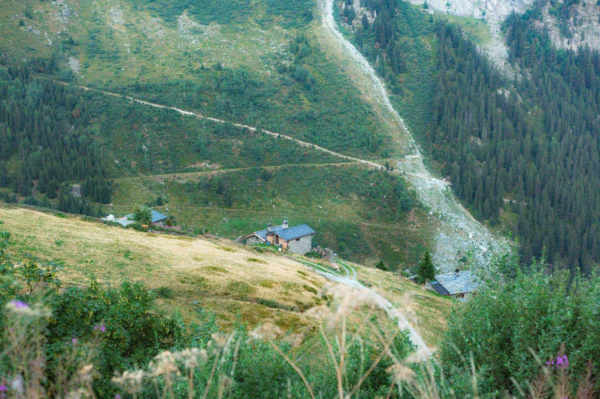
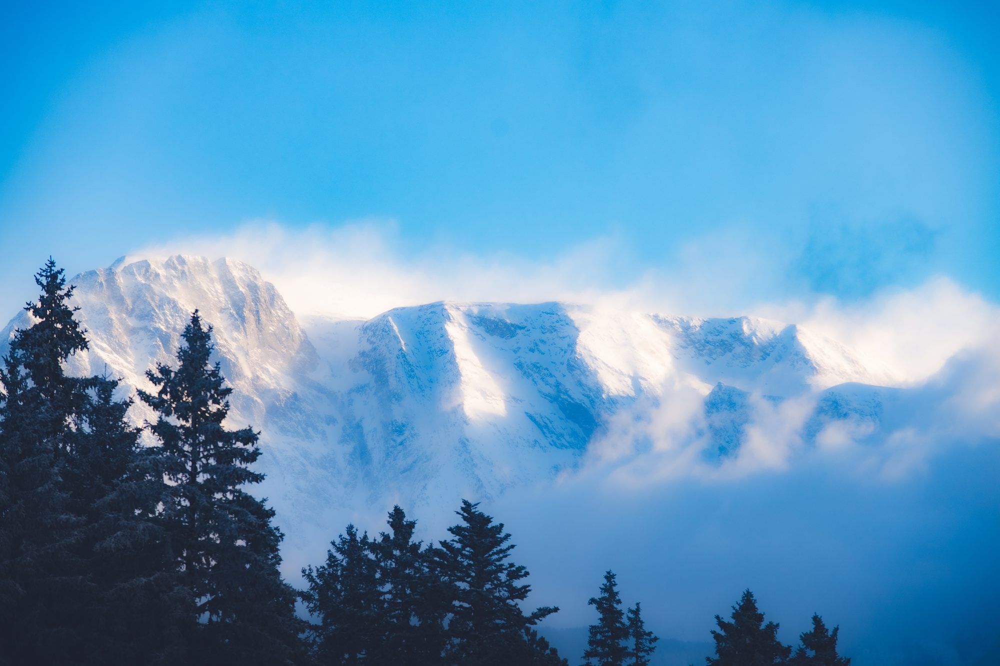
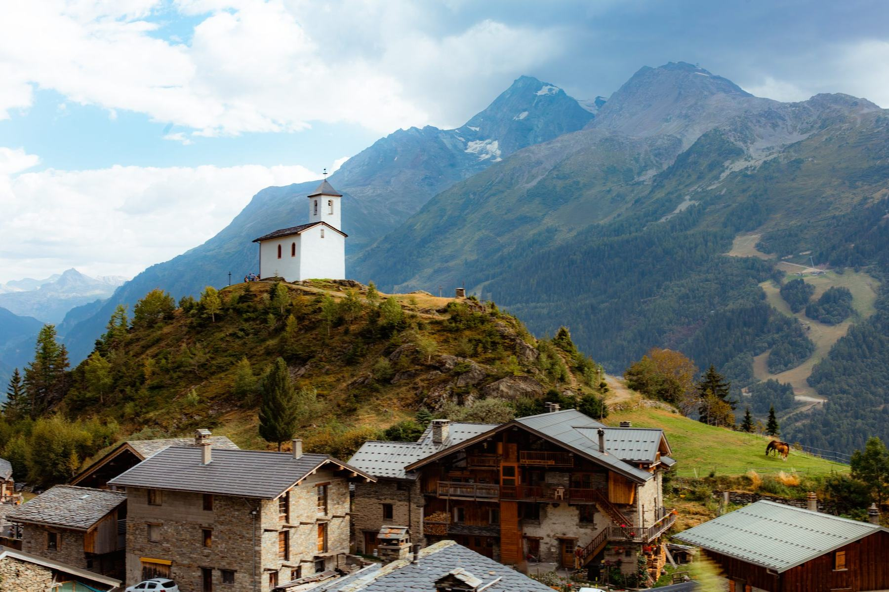
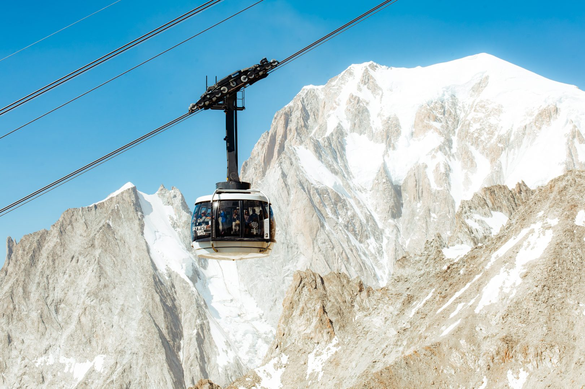

One image, one story
Every photo tells an emotion, a moment of grit, or a community. This page grows with every outing, while I wait for my next race photos.

Facing the ridges, mineral silence
Roped up on the glacier, technical climb
Paragliders above the valley
Ridgelines fading out, end of day
Trail winding back down to the hamlet
Summit in the mist
Sunday outing, mountain village
Facing Mont Blanc